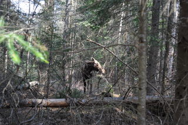
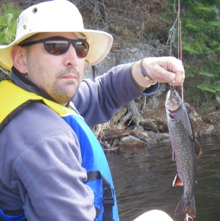

This weekend started a bit early, Wednesday early to be exact, and Pete and I continued a tradition of driving up the night before, camping out in our secret backwoods locations and being at the permit office bright and early. Makes for better campground selection and more fishing time. We got to our spot at dark, set up the tent and consumed some beverages. Morning came early and the temps cold, but the sun was nice and made everything look so fresh. We drove up to the permit office but stopped at a roadside store for some coffee and breakfast type danish which apparently each had 700 or so sugar laden calories. I consumed mine without question but Pete took one look at the ingredients and packed it away "for later" which I think means "never". I tell you, that was one crazy sugary fuity taste explosion which only made me a little high, and certainly ramped up for the paddling of the day. We arrive at the permit office, get our lakes and cover the road into the put-in, in record time.
As soon as we pull up into the put-in, we immediately notice a friendly moose walking past the parking lot. How friendly ? He(she?) started coming over, which was cool for a while and then became more and more scary as it walked to within 20 meters or so. The are huge animals when you're that close and I don't care who you are, a moose walks towards you and you think "I wonder if it will charge me". Turns out he/she was just wandering around because eventually he notices us, stops and then wanders off into the woods where he stands to watch us load our canoes. I take some pics and think back to the long telephoto lens I destroyed just before coming on this trip. Would have made for some nicer photos, but I only had my 50mm 1.8 on the body. We end up seeing a few more moose later in the morning on the way in. A classic Algonquin park start.
First things first, we wanted to make sure our camp was setup for comfort. So, wood gathering and chopping is essential for any later drunken burning event. Pete starts it all off with some agressive wood cutting. Lucky Kent brought his dog to guard our valuable pile from visiting trippers. We took fine advantage of all this wood to burn a bright hot fire while sipping beverages later that day.
We caught some fish. Small brookies, no monsters but brookies nonetheless. Not sure why I bring a few boxes full of lures. This lake, year after year, coughs up brookies on silver in-line spinners. I bet if I brought 10 (you can lose em you know), I'd have enough for a week of fishing.
We came, we conquered and we were happy.